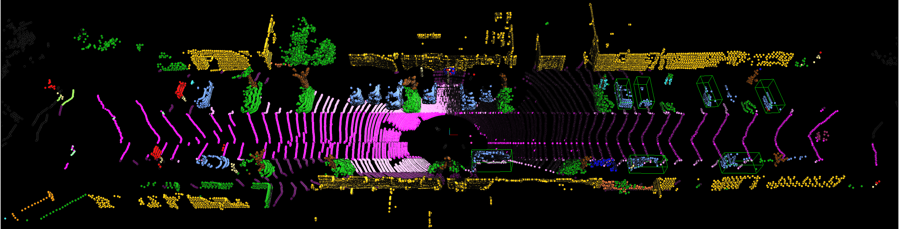

{{ page.title }}

|
Project 1: Understanding Multimodal Driving Data
Overview:
In this exercise, we look into understanding multimodal driving data.
Firstly, we create visualisation tools that will help understand and debug our future
models (such as in Project 3). In specific, we visualize the outputs of common tasks
such as 3D object detection and point cloud semantic segmentation given a LiDAR point
cloud, corresponding RGB camera image, ground truth semantic labels and network bounding
box predictions. Finally we increase our understanding of the LiDAR sensor itself by
identifying each laser ID from the point cloud directly, and dealing with the distortion
caused by the vehicle motion with the aid of GPS/IMU data.
Report: [PDF]
|
Project 2: Multitask Learning for Semantics and Depth
Overview:
In this exercise, we delve into Multi-Task Learning (MTL) architectures for dense prediction tasks.
In particular, for semantic segmentation (i.e., the task of associating each pixel of an image with
a class label, e.g., person, road, car, etc.) and monocular depth estimation (i.e., the task of
estimating the per-pixel depth of a scene from a single image). We first implement and examine
the structure of DeepLabv3+, and test the influence of hyper-parameters. Next, we implement the
branched architecture based on previous joint architecture and compare their performance.
Then we add the task distillation module to the branched architecture and do some comparison.
Finally, we further improve the model performance with a series of techniques: changing the unit
of depth measurement, substituting upsampling with up-convolution, adding skip connection of
feature2x, including Squeeze and Excitation layer and other hyper-parameter tuning.
|
Report: [PDF]
|
Project 3: 3D Object Detection
Overview:
In this exercise, there are two sub-problems.
In the first problem, we build a 2 stage 3D object detector.
To be more specific, we refine the proposals provided by the first stage
Region Proposal Network (RPN) through a detection pipeline consisting of:
Recall Computation, ROI Pooling, Sample Proposals, Loss Computation and
Non-maximum Suppression (NMS). Then we train the complete network, which
would be used as the baseline for comparison in Problem 2.
In the second problem, we focus on improving the refinement network given
the first stage RPN output. Our proposed refinement network improves the
performance from three aspects: 1. model structure: learning global and
local spatial feature by introducing MLP and canonical transformation;
2. loss function: including GIoU loss for regression task; 3. training
scheme: change the optimizer from SGD to Adam. For evaluation metrics,
we use mean average precision (mAP) of three difficulty levels: easy,
moderate and hard. The ablation test proves the effectiveness of our three
techniques. The combination of them performs the best among all difficulty levels.
|
Report: [PDF]
[PDF]
|